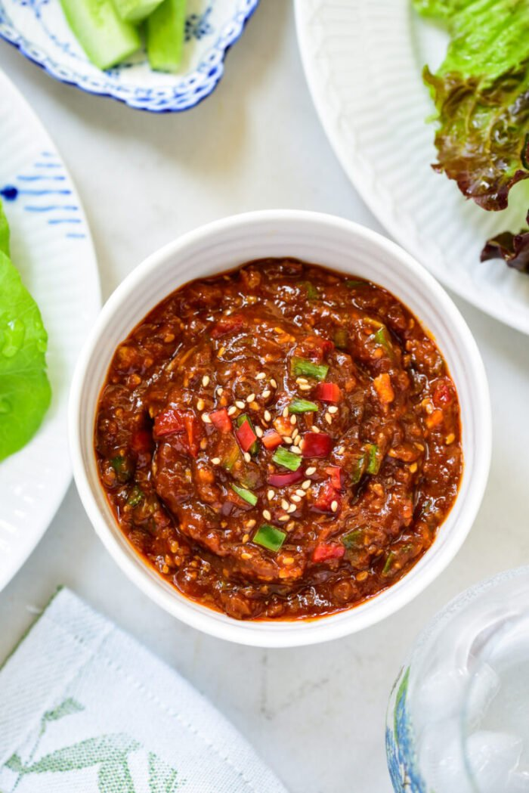

Ssamjang is best known as a dipping sauce that accompanies lettuce wraps for Korean BBQ. In food terms, ssam means wraps or wrapped food, and jang is a collective term for Korean fermented condiments, such as doenjang, gochujang, and ganjang.
Technically, ssamjang is any sauce that's used for ssam. While there are many different types, it's typically made with doenjang and/or gochujang as well as some other ingredients. The mixture is primarily used at the table as a sauce for vegetable wraps or as a dipping sauce for fresh vegetables such as cucumbers, carrots, and chili peppers.